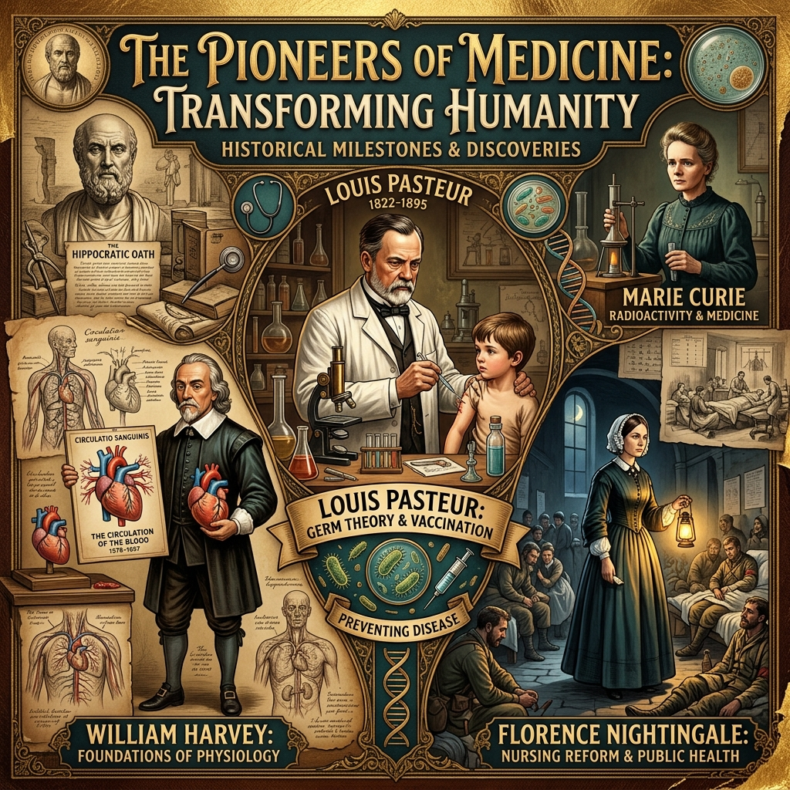

Edexcel GCSE History Paper 1

Key Individuals in Medicine
Revision Workbook
Revision Checklist
| Task Description |
Page |
Completed |
| Medieval Medicine (c1250–c1500): Timeline Knowledge Dump |
2 |
|
| Medieval Medicine (c1250–c1500): "Who Am I?" & Categorization |
3 |
|
| Medieval Medicine (c1250–c1500): Significance Ranking |
4 |
|
| Renaissance Medicine (c1500–c1700): Timeline Knowledge Dump |
5 |
|
| Renaissance Medicine (c1500–c1700): "Who Am I?" & Categorization |
6 |
|
| Renaissance Medicine (c1500–c1700): Significance Ranking |
7 |
|
| 18th & 19th Century (c1700–c1900): Timeline Knowledge Dump |
8 |
|
| 18th & 19th Century (c1700–c1900): "Who Am I?" & Categorization |
9 |
|
| 18th & 19th Century (c1700–c1900): Significance Ranking |
10 |
|
| Modern Medicine (c1900–present): Timeline Knowledge Dump |
11 |
|
| Modern Medicine (c1900–present): "Who Am I?" & Categorization |
12 |
|
| Modern Medicine (c1900–present): Significance Ranking |
13 |
|
Page 1
Medieval Medicine (c1250–c1500): Timeline Knowledge Dump
Task: Place the historical events, keywords, and individuals from the Word Bank onto the blank timeline below in the correct chronological order. Write a brief sentence explaining the significance of each.
Word Bank
Miasma Hippocrates Astrology Apothecary Bloodletting The Black Death (1348) The Church Physician Claudius Galen Roger Bacon The Four Humours
Page 2
Part 1: Who Am I?
Read the significance below and retrieve the correct historical individual from memory.

"Known as the "Father of Medicine". He created the Theory of the Four Humours, established the Hippocratic Oath, and pioneered clinical observation (observing patient symptoms rather than consulting astrology)."
Name:

"Developed the Theory of Opposites based on the Four Humours. His anatomical writings, though often based on animal dissection and highly flawed, were promoted by the Catholic Church and formed the absolute basis of medical training for over 1,000 years."
Name:

"An English philosopher and Franciscan friar who emphasized the study of nature through empirical observation. He was imprisoned by Church leaders for suggesting that doctors should conduct their own independent experiments."
Name:
Part 2: Connecting the Dots
Explain the relationship or connection between the two historical individuals below. Did they influence each other? Prove each other wrong?
Connection: Hippocrates & Roger Bacon
(Explain their relationship here...)
Page 3
Part 3: Significance Ranking
Rank the following individuals from 1 (Most Significant) to 3 (Least Significant) regarding their impact on medicine. Then, write a paragraph justifying your #1 choice.
Individuals to Rank:
- Hippocrates
- Claudius Galen
- Roger Bacon
Justification for #1:
Page 4
Renaissance Medicine (c1500–c1700): Timeline Knowledge Dump
Task: Place the historical events, keywords, and individuals from the Word Bank onto the blank timeline below in the correct chronological order. Write a brief sentence explaining the significance of each.
Word Bank
Andreas Vesalius William Harvey Dissection The Great Plague (1665) Thomas Sydenham Printing Press Anatomy Theory of Opposites The Royal Society
Page 5
Part 1: Who Am I?
Read the significance below and retrieve the correct historical individual from memory.

"A Renaissance physician who published "On the Fabric of the Human Body" (1543). By performing his own human dissections, he proved over 300 errors in Galen's work (e.g., proving the human jaw bone is one piece, not two)."
Name:

"An English physician who discovered the full circulation of blood in the human body. By dissecting cold-blooded animals and experimenting with ligatures, he proved the heart acts as a pump, disproving Galen's theory that blood was constantly manufactured in the liver."
Name:

"A highly influential English physician of the 17th century. He strongly advocated for the direct observation of patient symptoms and classifying diseases (like measles and scarlet fever) into distinct groups, moving away from the Theory of the Four Humours."
Name:
Part 2: Connecting the Dots
Explain the relationship or connection between the two historical individuals below. Did they influence each other? Prove each other wrong?
Connection: Thomas Sydenham & Andreas Vesalius
(Explain their relationship here...)
Page 6
Part 3: Significance Ranking
Rank the following individuals from 1 (Most Significant) to 3 (Least Significant) regarding their impact on medicine. Then, write a paragraph justifying your #1 choice.
Individuals to Rank:
- Andreas Vesalius
- William Harvey
- Thomas Sydenham
Justification for #1:
Page 7
18th & 19th Century (c1700–c1900): Timeline Knowledge Dump
Task: Place the historical events, keywords, and individuals from the Word Bank onto the blank timeline below in the correct chronological order. Write a brief sentence explaining the significance of each.
Word Bank
Louis Pasteur Germ Theory (1861) Joseph Lister Edward Jenner Florence Nightingale Edwin Chadwick Vaccination (1796) Chloroform Robert Koch Public Health Act (1875) James Simpson Spontaneous Generation John Snow Cholera (1854) Wilhelm Roentgen Broad Street Pump Carbolic Acid
Page 8
Part 1: Who Am I?
Read the significance below and retrieve the correct historical individual from memory.

"An English country doctor who discovered the first successful vaccine in 1796. After observing that milkmaids who caught cowpox never caught smallpox, he deliberately infected a boy with cowpox to successfully immunize him against the deadly smallpox virus."
Name:

"A social reformer who published his famous "Report on the Sanitary Conditions of the Labouring Population" in 1842. His work proved the link between extreme poverty, filth, and disease, leading to the first Public Health Act of 1848."
Name:

"A pioneering British surgeon who proved that cholera was a waterborne disease. During the 1854 Soho outbreak, he mapped out the deaths and traced the source to a contaminated public water pump on Broad Street, famously removing its handle to stop the epidemic."
Name:

"A legendary nurse who drastically reduced death rates at the Scutari hospital during the Crimean War (1854) by implementing strict hygiene and sanitation standards. She later published "Notes on Nursing" and established professional training for nurses."
Name:
Part 2: Connecting the Dots
Explain the relationship or connection between the two historical individuals below. Did they influence each other? Prove each other wrong?
Connection: Joseph Lister & Louis Pasteur
(Explain their relationship here...)
Page 9
Part 3: Significance Ranking
Rank the following individuals from 1 (Most Significant) to 9 (Least Significant) regarding their impact on medicine. Then, write a paragraph justifying your #1 choice.
Individuals to Rank:
- Edward Jenner
- Edwin Chadwick
- John Snow
- Florence Nightingale
- James Simpson
- Louis Pasteur
- Joseph Lister
- Robert Koch
- Wilhelm Roentgen
Your Rankings:
1.
2.
3.
4.
5.
6.
7.
8.
9.
Justification for #1:
Page 10
Modern Medicine (c1900–present): Timeline Knowledge Dump
Task: Place the historical events, keywords, and individuals from the Word Bank onto the blank timeline below in the correct chronological order. Write a brief sentence explaining the significance of each.
Word Bank
DNA Structure (1953) James Watson Francis Crick Clean Air Acts Magic Bullets Sahachiro Hata Marie Curie Gerhard Domagk Penicillin Rosalind Franklin Ernst Chain Alexander Fleming Electron Microscope Paul Ehrlich Howard Florey Salvarsan 606 Karl Landsteiner The NHS (1948) Mass Production
Page 11
Part 1: Who Am I?
Read the significance below and retrieve the correct historical individual from memory.

"A former student of Robert Koch who theorized the existence of "magic bullets" — chemical compounds that could target and destroy specific disease microbes inside the body without harming the rest of the patient. He co-discovered Salvarsan 606."
Name:

"A brilliant researcher who worked with Paul Ehrlich. In 1909, while meticulously re-testing hundreds of failed chemical compounds, Hata discovered that the 606th compound (Salvarsan 606) successfully cured the deadly disease syphilis, creating the world's first magic bullet."
Name:

"Discovered the second magic bullet in 1932. He found that a red chemical dye called Prontosil effectively cured blood poisoning (streptococcus) in mice. He later bravely used it to successfully cure his own daughter's severe infection, proving its efficacy in humans."
Name:

"Accidentally discovered Penicillin in 1928 after returning from a holiday to find that a mysterious mould (Penicillium notatum) had grown in a neglected petri dish and killed the surrounding staphylococcus bacteria."
Name:
Part 2: Connecting the Dots
Explain the relationship or connection between the two historical individuals below. Did they influence each other? Prove each other wrong?
Connection: Gerhard Domagk & Ernst Chain
(Explain their relationship here...)
Page 12
Part 3: Significance Ranking
Rank the following individuals from 1 (Most Significant) to 11 (Least Significant) regarding their impact on medicine. Then, write a paragraph justifying your #1 choice.
Individuals to Rank:
- Paul Ehrlich
- Sahachiro Hata
- Gerhard Domagk
- Alexander Fleming
- Howard Florey
- Ernst Chain
- James Watson
- Francis Crick
- Rosalind Franklin
- Karl Landsteiner
- Marie Curie
Your Rankings:
1.
2.
3.
4.
5.
6.
7.
8.
9.
10.
11.
Justification for #1:
Page 13